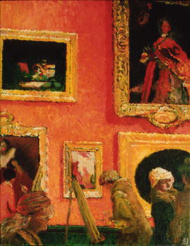
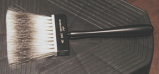

Techniques
de mélange de couleurs
Le mélange de
couleurs était interdit dans le Moyen-âge chrétien.
Ceci ne doit pas forcément surprendre le lecteur car différentes
civilisations ont posé des interdits plus ou moins forts dans
l'utilisation de la couleur (exemple : la polychromie fut décriée sous la
dynastie Han en Chine). Si les peintres et miniaturistes ont quelquefois
pu discrètement transgresser la règle sans trop de difficultés (ce qu'ils
n'ont pas toujours voulu faire), les teinturiers durent attendre la
Renaissance pour pratiquer la synthèse dans leurs cuves (même le mélange
pratiqué en deux phases ne réapparût - très progressivement - qu'à partir
de cette époque).
Les ateliers d'enluminure utilisaient en effet tous les pigments
alors que dans les teintureries, les couleurs chaudes et les froides
étaient traités dans des ateliers différents. (à ce sujet et
d'autres, lire un très intéressant
ouvrage d'Anne Varichon, voir Références)
|
Sommaire
Travail alla
prima
Glacis
Blaireautage,
fondu
Putoisage
Avec ou
sans le blanc |
Le mélange de couleurs, largement pratiqué dans l'Antiquité,
représente pourtant une ressource essentielle du peintre, comme
l'explosion artistique de la Renaissance et tous les merveilleux travaux
qui suivirent en attestent.

Travail
alla prima
(de l'italien, signifiant à peu près à l'avance)
En peinture, technique de coloration par un mélange opéré sur le
tableau, "dans le frais".
Une première couleur est posée. Sans attendre qu'elle sèche, une
seconde couleur lui est adjointe, puis d'autres, éventuellement. Les "imperfections" du
mélange qui en résulte sont souvent recherchées. Le procédé, de
toutes manières, souligne la touche et incite celle-ci à danser.
La peinture à l'huile - qui reste fraîche plus longtemps que les
autres - est certainement celle qui facilite le plus ce procédé.
L'acrylique peut convenir, adjointe d'un retardateur de séchage.
L'illustration ci-contre représente un travail à l'huile - inspiré d'un
tableau de Vuillard - réalisé en majeure partie "alla prima".
Les nuances de rouges sont obtenues par l'adjonction dans le frais d'une
multitude de couleurs : bleus, rouges, verts, bruns, etc.
Glacis
C'est un mélange qui n'en est pas un. Il s'agit plutôt d'une combinaison.
Lire la description de ce procédé dans la section
des techniques d'application.
Blaireautage
Un terme qui recouvre plusieurs pratiques.
* La première tire son nom d'une analogie avec le pelage de l'animal, blanc
et noir
Il s'agit de juxtaposer deux couleurs et de les fondre "dans le
frais", ce qui fait apparaître une couleur de transition.
Toutes les peintures et encres peuvent être employées mais elles donnent
des résultats très différents.
La peinture "en pâte" nécessitera une action mécanique pour
forcer la fusion. Le procédé s'apparentera alors au travail alla
prima. Les pinceaux employés pour réaliser le fondu seront généralement
assez doux. La forme "éventail" est
parfois utilisée.
Les peintures très liquides (aquarelle, lavis, etc.) ne nécessitent qu'une
simple mise en contact des couleurs juxtaposées, parfois à l'aide d'une
seule goutte d'eau.

* La seconde provient du poil proprement dit (voir photo de brosse à
blaireauter ci-contre). Il ne s'agit pas d'une
technique de mélange de couleurs.
On utilise le véritable poil de blaireau pour effacer les traces laissées
lors de brossages antérieurs. Il s'agit de lisser mécaniquement des
surfaces restées irrégulières ("coup de brosse" resté
apparent).
Nous avons pu repérer ce type d'usages dans le domaine du vitrail.
Putoiser
Putoiser a plusieurs sens, bien que les techniques
concernées soient bien circonscrites : porcelaine, céramique, vitrail. Il
s'agit toujours d'un travail de peinture de toutes manières.
Pour
certains, il s'agit de mêler des teintes et de les fondre en douceur avec un
pinceau en putois ou en blaireau de sorte à lisser les aplats et les lavis.
L'assemblage du pinceau s'apparente à une brosse, un balais.
Pour
d'autres, putoiser consiste à donner des aspects granités à l'aide de poils
durs (putois, blaireau - peinture vitrail). Il s'agit d'une sorte de synthèse
par juxtaposition.
Les
pinceaux ou tampons en mousse synthétique et des petits-gris sont également
utilisés. En fait, les formes et les poils sont très variés ainsi que les
procédés et les objectifs.
Avec
ou sans le blanc ?
C'est une question redoutable en peinture. Le choix peut entraîner
d'innombrables répercussions sur la manière de travailler (voire de penser le
travail de peinture) et pas seulement sur l'aspect plastique immédiat.
Le blanc, hormis le fait qu'il donne, en mélange
avec les couleurs, un
aspect "pastel", une apparence crayeuse pas forcément toujours souhaitable, a
une autre particularité : même en petite quantité, il opacifie, il rend la
peinture couvrante. Pour cette raison, son emploi en aquarelle et en glacis
(huile, acrylique, vinyle, etc.), techniques jouant sur la transparence, est
généralement réservé à des interventions très ponctuelles destinées à
renforcer certains motifs précis. Il peut aussi, toujours dans le même
contexte du glacis et de l'aquarelle, autoriser certains flous nettement
vaporeux.
Pour l'emploi en pâte, il faut reconnaître que le blanc est pratiquement
indispensable sauf utilisation de la transparence sur fond clair et emploi de
médiums-gels.
Il existe un troisième type d'utilisation du blanc, ancien (peintres
primitifs italiens et flamands) mais toujours d'actualité. Il faut d'abord
faire un fond sombre ou mi-teinte (voir imprimatures)
généralement de couleur froide, puis effectuer un travail précis de mise en place
des valeurs à l'aide de teintes obtenues par mélange de la couleur du fond et
de blanc. C'est par-dessus cette base que seront installés les chromatismes
sans blanc, juste illuminés par transparence. Ce type de démarches est
encore employé de nos jours pour certaines peintures traditionnelles d'un haut
niveau artistique dont nous citerons l'une des plus remarquables : l'art
pictural balinais.
Retour
début de page